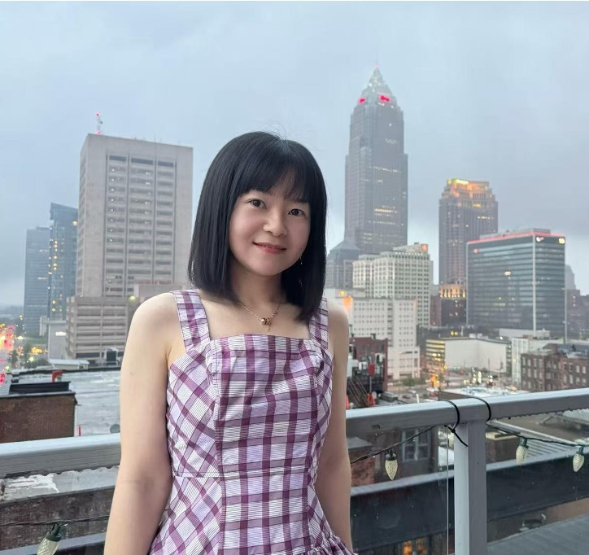
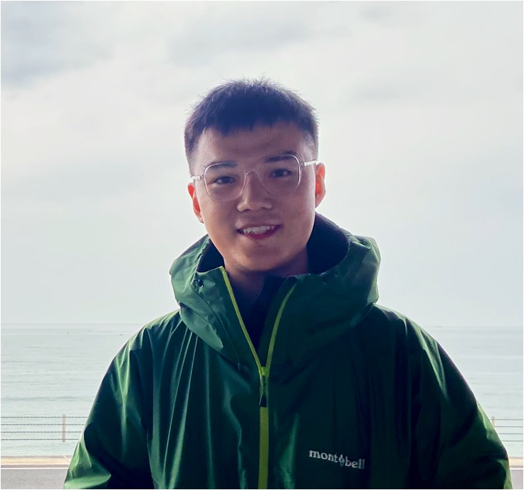

|
Yinghui Wu Theodore L. and Dana J. Schroeder Associate Professor Department of Computer & Data Sciences Case School of Engineering Case Western Reserve University |
Olin 515 2101 Martin Luther King Jr Dr, Cleveland, OH 44106 Office: 216.368.8829 Email: yxw1650_at_case_dot_edu Homepage: https://yinghwu.github.io/ |
Home | Teaching | Research | Services | Students | Publications | Talks | Bio
Database Group@CWRU
The Database Group@CWRU, directed by Dr. Yinghui Wu, devise and develop scalable solutions and data systems to help users model, extract, and explore high-quality information and knowledge from and for complex data analytical tasks.
- Postdoc
Hanchao Ma - PhD



Mengying Wang Mingjian Lu Haolai Che Fei Shao - MS

Ao Jiao
- BS

Pengjun Lu
Center of Excellence (MDS3 COE)@CWRU (co-supervised)
- Graduate RAs:
- Arafath
Nihar (CS)
- Tian
Wang (CS)
Alumni (Recent, 2021-2026)
- PhD:
- Yangxin Fan (PhD '26; @Epsilon)
- Sameera Nalin Venkat (co-advised w. Roger French@SDLE; Postdoctoral Research Associate @PNNL/EMSL)
- Sheng Guan (@Amazon)
- Arman Ahmed (co-advised w. Anurag Srivastava, WSU; @Intel Corporation)
- Ahmad Maroof Karimi (@Oak Ridge National Laboratory; co-advised w. Roger French@SDLE)
- MS:
- Shrinidhi Hegde (CS MS '26; @MultiCASE)
- Harry Trung (CS MS '26)
- Aiden Le (CS MS '26)
- Lam Nguyen (CS MS '25; @Microsoft)
- Jiaqi Li (CS MS '25; @Toyota)
- Yiyang Bian (CS MS '24; Ph.D. @UCR)
- Deepa Bhuvanagiri (CS MS '23; @P&G)
- Lei Ruan (CS MS '22; @Fortinet)
- Sukhjinder Singh (CS MS '21; @Microsoft)
- Yunzhou Cao (CS Sp '22)
- Undergraduate:
- Franklin Wang (graduated CWRU '26; @Fast Enterprises, LLC)
- Escanord Le (graduated CWRU '24; Ph.D. @Rice U)
- Jiamu Zhang (graduated CWRU '24; Ph.D. @Rice U)
- Wentao Lin (graduated CWRU '24; @CTrees)
- MDS3 COE Graduate Research
Alumni:
- Tommy Ciardi (@MorelandConnect)
- Visiting Scholars:
- Dazhuo Qiu (Fall '24 - Spring '25; Postdoc @Lyon 1 University & CNRS LIRIS)
[+][-] Earlier Alumni (before 2021)
- PhD:
- Mohammad Hossein Namaki (@Microsoft)
- Qi Song (Professor @USTC)
- Peng Lin (@ByteDance)
- Mengze Zhou (co-advised w. Anurag Srivastava, WSU; @PacifiCorp)
- MS:
- Keyvan Sasani (@BigStream)
- Jingling Tao (@Mercury Systems Inc.)
- Xin Zhang (@AWS Redshift)
- Giridhar Manoharan (@Google)
- Undergraduate / NSF REU:
- Jialiang Shen (Beijing University of Posts and Telecommunications, '17; MS@CMU; @Amazon)
- NSF REU:
Nathaniel David Sprecher (Grove City College, Summer '19; @InterSystems)
Evan McElheny (Marist College, Summer '18; @Datadog)
Casey Fleck (Coastal Carolina University, Summer '17; @Angi)
Shayan Monadjemi (UT Dallas, Summer '16; PhD@WashU in St. Louis; Visual Analytics Research Scientist @ORNL)
Rebecca Baumher (University of Pennsylvania, Summer '15; @Google) - Visiting Scholars:
- Xinqiang Xie (Postdoc@Northeast University, China)
- Hui Sun (Prof.@Renmin University, China)
- Ling Xiong (Prof. @Wuhan University of Science and Technology, China)